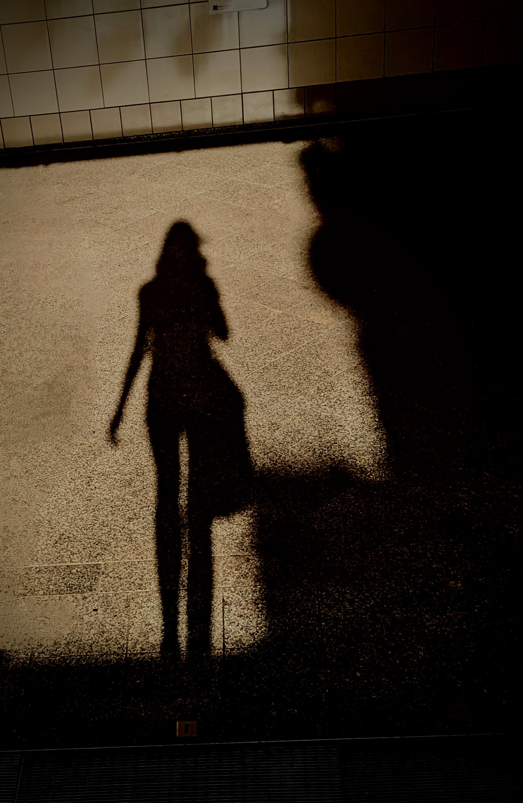
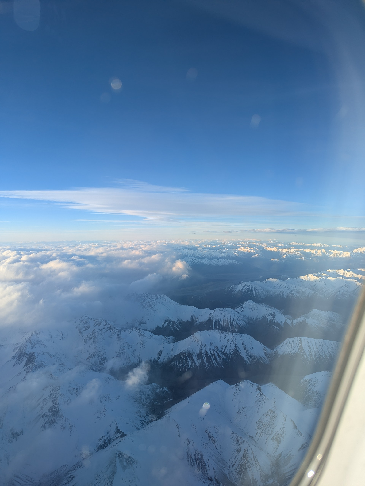

<!DOCTYPE html>
<html lang="en">

  <head>
     <meta charset="UTF-8">
     <meta name="viewport" content="width=device-width, initial-scale=1.0">
     <link rel="stylesheet" href="about-me.css">
     <title>about me</title>
  </head>

</html>
<body>


    <section class="hero">
        <div class="hero-text">My time in NZ</div>
    </section>

    <hr class="line">

    <nav class="navbar">
  <ul>
    <li><a href="index.html">HOME</a></li>
    <li><a href="about-me.html">ABOUT ME</a></li>
    <li><a href="schoolL.html">SCHOOL LIFE</a></li>
    <li><a href="Hfamily.html">HOST FAMILY</a></li>
    <li><a href="Q&A.html">Q&A</a></li>
  </ul>
    </nav>

  <hr class="line">

  <div class="topic1">
    <h1>Who am I?</h1>
    <div class="card">
      <div class="card-text">
        <p>My name is <strong> Pia Schliebner</strong> and I'm from the capital city of Germany, <strong>Berlin</strong>. I'm <strong>14 years old</strong> and went to a High School in Germany that specializes in maths and science - subjects I really enjoy. 
          So I'm particulary interested in maths, physics, chemistry, digital technology and French.
          <br> 
          Outside of school, I love to bake, draw or watch anime. In addition I fence and I've been doing foil-fencing for over two years now (so not for that long). Another interest of me is learning new languages even if 
          I can only speak German and English almost fluently. But like I mentioned I'm learning French which is a really beautiful language and I did Latin and plan to continue with it when I return. Oh and I should also mention that I LOVE <strong>Skiing!</strong> And I also love to travel and explore new places and cultures.
        </p>
      </div>
      
    </div>

  </div>

  <div class="topic2">
    <h1>Why did I come to NZ?</h1>
    <div class="card">
      <div class="card-text">
        <p>
          I came to New Zealand because I wanted to experience a new culture and improve my English skills. I also thought it would be a great opportunity to make new friends and to create lasting memories.
        </p>
      </div>
      
    </div>

  </div>

  <footer class="footer">
        <p>&copy; 2026 Website By Pia Schliebner</p>
    </footer>
  


</body>

